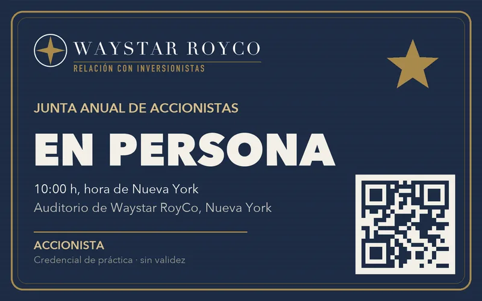
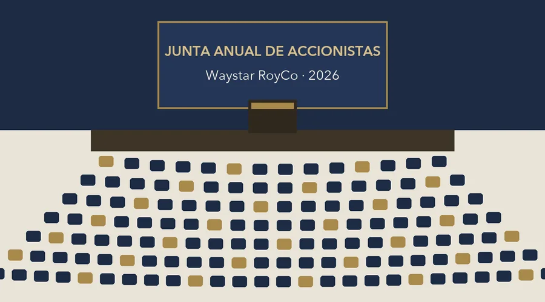

Relación con Inversionistas
Junta anual de accionistas
10:00 h, hora de Nueva York. Asista en persona o en línea, y mande su pregunta al consejo.

Ya hay … accionistas registrados
Orden del día
- 1
Mensaje del presidente del consejo
Apertura de la junta.
- 2
Informe del año
La dirección presenta el informe anual.
- 3
Elección de consejeros
Los accionistas votan a los consejeros propuestos.
- 4
Preguntas de los accionistas
El consejo contesta las preguntas registradas que alcancen en el tiempo de la junta.
Elija cómo asiste

Regístrese
Le confirmamos por correo su lugar y cómo entra.
Su registro quedó
En unos minutos le llega su confirmación por correo. Revise también su carpeta de spam.
Preguntas frecuentes
¿Dónde es la junta?
En el auditorio de Waystar RoyCo, en Nueva York, y en transmisión en vivo para quien se registre en línea.
¿Cómo entro en línea?
Un día antes le llega por correo su liga personal. No la comparta: es solo para usted.
¿Puedo mandar más de una pregunta?
Una por persona, de máximo 280 caracteres. El consejo contesta en la junta las que alcancen; las demás, por correo.
¿Puedo cambiar de modalidad?
Sí. Responda al correo de confirmación con la modalidad nueva antes de que cierre el registro.
Aviso de privacidad
Sus datos los recibe Waystar RoyCo · Relación con Inversionistas solo para confirmar su registro y enviarle su acceso a la junta. No los compartimos con nadie. Para darse de baja, responda "baja" a cualquiera de nuestros correos y lo borramos de la lista.